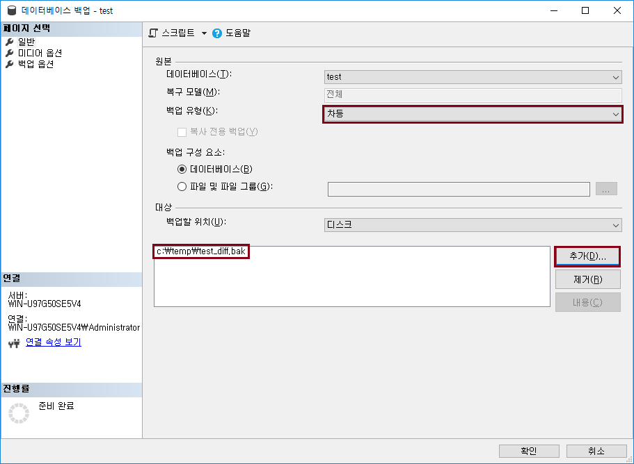

백업과 복원
데이터베이스 백업
-
데이터베이스 백업하는 방법과 종류는 어떤 것이 있는지 알아보자.
SQL Server 백업 종류
-
전체 백업 (Full): 데이터베이스를 구성하는 모든 데이터를 백업하고 동시에 그러한 데이터를 복구할 수 있을 만큼의 로그를 백업
-
차등 백업 (Diffrential): 가장 마지막 전체 백업 이후에 변경된 데이터만을 백업
-
트랜잭션 로그 백업 (Log): 트랜잭션 로그 파일을 백업
SQL Server 백업 특징
-
반드시 한 번은 전체 백업을 받고, 차등 백업 및 트랜잭션 로그 백업을 해야 함
-
차등 백업, 트랜잭션 로그 백업은 반드시 가장 최근에 전체 백업한 파일부터 순서대로 백업했던 파일들이 있어야 함. 파일 한 개라도 분실하면 소용없음
백업 방법
전체 백업, 차등 백업, 트랜잭션 로그 백업 순서로 백업을 진행함
-
테이블 생성
CREATE TABLE test (id INT identity(1,1), name varchar(10));
-
데이터베이스 > 태스크 > 백업
-
백업 유형 "전체", 백업할 위치는 "C:\Temp\test_full.bak" 입력

-
데이터 입력 (여러번 반복)
INSERT INTO test (name) VALUES ('test');
-
차등 백업을 함. 백업할 위치는 "C:\Temp\test_diff.bak" 입력

-
데이터 삭제
DELETE FROM test WHERE id > 5;
-
트랜잭션 로그 백업을 함. 백업할 위치는 "C:\Temp\test_trans.bak" 입력
다음 페이지에서 복원에 대해서 알아보고 복원을 진행해 보자.
Let's Prcactice
-
백업 구성 요소에 파일 및 파일 그룹으로도 백업을 진행해 보자.
-
백업 옵션 > 백업 압축 설정을 사용해 보자.
-
위 INSERT 쿼리에서 반복 수행할 수 있는 쿼리를 만들어 보자.
처음으로
이전
다음